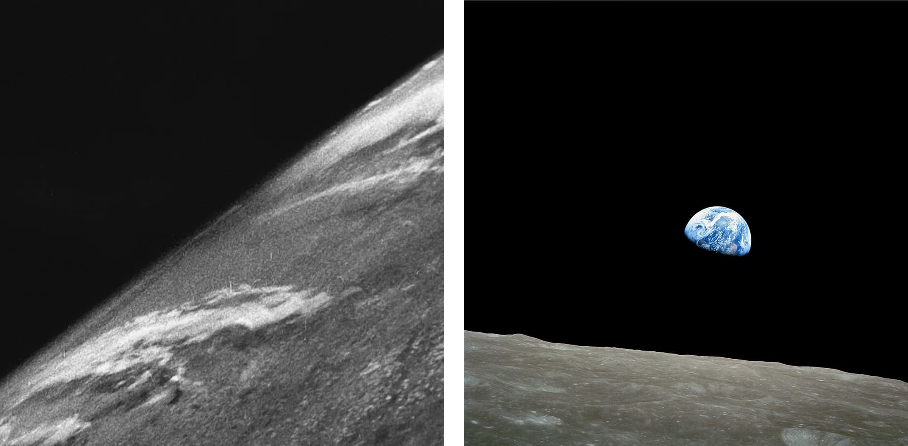
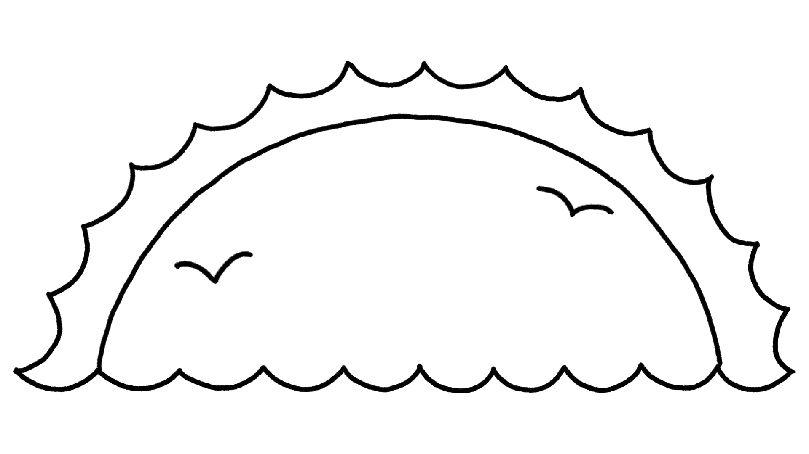

Sessão 6: Gênesis 1 é uma Cosmologia dos Israelitas AntigosSession 6: Genesis 1 Is an Ancient Israelite Cosmology
Principais LiçõesKey Takeaways
Em hebraico, a palavra para “terra” tipicamente significa “terreno,” em vez de um globo ou esfera flutuando no espaço.In Hebrew, the word for “earth” typically means “land,” rather than a globe or sphere floating in space.
Então, quando você lê Gênesis 1, imagine a história comunicando sobre o terreno em que as pessoas vivem.So when you read Genesis 1, imagine the story communicating about the land the people live on.
Deus nomeia o raqia’ de shamayim—a palavra hebraica para “céus” ou “céu.”God names the raqia’ the shamayim—the Hebrew word for “skies” or “heavens.”
Na Bíblia, o raqia’ é a cúpula sólida acima do terreno que contém as águas de cima, e a criação do raqia’ cria um lugar onde a vida pode florescer.In the Bible, the raqia’ is the solid dome above the land that holds back the waters above, and the creation of the raqia’ creates a place where life can flourish.
Na visão bíblica, Deus sustenta graciosamente o raqia’, mantendo suas comportas fechadas para que a Terra nunca mais seja destruída (Gn. 9:11).In the biblical view, God graciously sustains the raqia’, keeping its floodgates closed so that the Earth will never again be destroyed (Gen. 9:11).
“Terra” em Gênesis 1:1-2“Earth” in Genesis 1:1-2
Em hebraico, ’erets (ארץ) não significa “terra-globo.” Este é um significado moderno da palavra inglesa “earth” que depende do conceito do planeta como uma esfera. Este conceito não estava disponível para os autores bíblicos na época.In Hebrew, ’erets (ארץ) does not mean “globe-earth.” This is a modern meaning of the English word “earth” that depends on the concept of the planet as a sphere. This concept was not available to the biblical authors at the time.
Estas fotos são fascinantes, mas totalmente irrelevantes para entender o que a antiga palavra hebraica ’erets significa em Gênesis 1.These photos are fascinating but totally irrelevant for understanding what the ancient Hebrew word ’erets means in Genesis 1.
Não há usos de ’erets na Bíblia Hebraica que descrevam o terreno como uma esfera. Em vez disso, o significado da palavra descreve o terreno que está abaixo dos céus e das nuvens.There are no uses of ’erets in the Hebrew Bible that describe the land as a sphere. Rather, the word’s meaning describes the land that is below the skies and the clouds.
Salmos 102:19 NASBPsalm 102:19 NASB
Pois [Deus] olhou do alto de sua santidade; dos céus o SENHOR contemplou o 'erets.For [God] looked down from his holy height; from heaven the LORD gazed upon the 'erets.
Salmos 103:11 NASBPsalm 103:11 NASB
Pois tão alto quanto os céus estão acima do ‘erets, tão grande é a sua benignidade para com aqueles que o temem. Ao olhar para o uso bíblico de ‘erets, podemos ver que uma palavra inglesa mais apropriada para traduzir ’erets seria “terreno.”For as high as the heavens are above the ‘erets, so great is his lovingkindness toward those who fear him. By looking at the biblical usage of ‘erets, we can see that a more appropriate English word for translating ’erets would be "land."
“Firmamento/Extensão/Abóbada/Cúpula” em Gênesis 1:6-8“Firmament/Expanse/Vault/Dome” in Genesis 1:6-8
Em hebraico, raqia’ se refere a uma cúpula azul sólida acima do terreno, acima da qual presume-se haver águas. A palavra inglesa “dome” (cúpula) é uma tradução precisa da palavra com base em seus outros usos no texto bíblico.In Hebrew, raqia’ refers to a solid blue dome above the land, above which are presumed to be waters. The English word “dome” is an accurate rendering of the word based on its other uses in the biblical text.
O Substantivo Raqia'The Noun Raqia'
Gênesis 1:6-8 NASB*Genesis 1:6-8 NASB*
6 E Deus disse: “Haja um raqia' no meio das águas, e que ele separe as águas das águas.” 7 Deus fez o raqia' e separou as águas que estavam abaixo do raqia' das águas que estavam acima do raqia'; e assim foi. 8 Deus chamou o raqia' de “céus.” E houve tarde e houve manhã, segundo dia. *Palavras-chave Adaptadas pelo Professor6 And God said, “Let there be a raqia' in the midst of the waters, and let it separate the waters from the water.” 7 God made the raqia', and separated the water which were below the raqia' from the waters which were above the raqia'; and it was so. 8 God called the raqia' “heavens.” And there was evening and there was morning, a second day. *Key Words Adapted by Teacher
Gênesis 1:20 NASB*Genesis 1:20 NASB*
E Deus disse: “... e que as aves voem sobre o terreno contra a superfície do raqia' ...” *Palavras-chave Adaptadas pelo ProfessorAnd God said, “... and let the birds fly over the land against the surface of the raqia' ...” *Key Words Adapted by Teacher
Ezequiel 1:22, 26 NASB*Ezekiel 1:22, 26 NASB*
22 E havia algo como um raqia' sobre as cabeças dos seres viventes, como a aparência de gelo, estendido sobre suas cabeças acima ... 26 e acima do raqia' que estava sobre suas cabeças algo como safira azul, a aparência de um trono ... *Palavras-chave Adaptadas pelo Professor22 And there was something like a raqia' over the heads of the living creatures, like the appearance of ice, stretched out over their heads above ... 26 and above the raqia' that was over their heads something like blue sapphire, the appearance of a throne ... *Key Words Adapted by Teacher
O Verbo Raqa’The Verb Raqa’
Em hebraico, raqa’ significa “martelar, alisar, estender.”In Hebrew, raqa’ means “to hammer out, smooth, spread out.”
Êxodo 39:3 NASB*Exodus 39:3 NASB*
E eles [os artesãos] raqa'ram lâminas lisas de ouro, e as cortaram em fios para serem tecidos com azul, púrpura e escarlate ... *Palavras-chave Adaptadas pelo ProfessorAnd they [the craftsmen] raqa'd smooth sheets of gold, and they cut them into cords to be woven together with blue and purple and scarlet ... *Key Words Adapted by Teacher
Números 16:39 NASB*Numbers 16:39 NASB*
Então Eleazar, o sacerdote, pegou os braseiros de bronze que os homens que foram queimados haviam oferecido, e eles os raqa'ram como um revestimento para o altar ... *Palavras-chave Adaptadas pelo ProfessorSo Eleazer the priest took the bronze censers which the men who were burned had offered, and they raqa'd them out as a plating for the altar ... *Key Words Adapted by Teacher
Isaías 40:19 NASB*Isaiah 40:19 NASB*
Quanto ao ídolo, um artesão o funde, um ourives o raqa' com ouro ... *Palavras-chave Adaptadas pelo ProfessorAs for the idol, a craftsman casts it, a goldsmith raqa's it with gold ... *Key Words Adapted by Teacher
Isaías 42:5 NASB*Isaiah 42:5 NASB*
Assim diz Deus, o SENHOR, que criou os céus e os estendeu, que raqa'ou o terreno e o que dele brota,Thus says God the LORD, who created the heavens and stretched them out, who raqa'd the land and what springs up from it,
que dá fôlego ao povo sobre ele e espírito aos que nele andam ...who gives breath to the people on it and spirit to those who walk in it ...
*Palavras-chave Adaptadas pelo Professor*Key Words Adapted by Teacher
As Janelas do Raqia’The Windows of the Raqia’
O raqia' é uma cúpula azul sólida entre o terreno e as águas cósmicas, que são liberadas sobre o terreno através de janelas no raqia’.The raqia' is a solid blue dome between the land and the cosmic waters, which are released over the land through windows in the raqia’.
Gênesis 7:11 NASB*Genesis 7:11 NASB*
No ano seiscentos da vida de Noé, no segundo mês, no dia dezessete do mês, naquele mesmo dia todas as fontes do grande abismo irromperam, e as janelas dos céus foram abertas. *Palavras-chave Adaptadas pelo ProfessorIn the sixth hundreth year of Noah’s life, in the second month, on the seventeeth day of the month, on the same day all the fountains of the great deep burst open, and the windows of the skies were opened. *Key Words Adapted by Teacher
Pergunta para ReflexãoReflection Question


O que a palavra “terra” significa no texto bíblico? O que é o raqia’, e o que ele faz?What does the word “earth” mean in the biblical text? What is the raqia’, and what does it do?